回溯算法实际上一个类似枚举的搜索尝试过程，主要是在搜索尝试过程中寻找问题的解，当发现已不满足求解条件时，就“回溯”返回，尝试别的路径。回溯法是一种选优搜索 法，按选优条件向前搜索，以达到目标。但当探索到某一步时，发现原先选择并不优或达不到目标，就退回一步重新选择，这种走不通就退回再走的技术为回溯法，而满足回溯条件的某个状态的点称为“回溯点”。许多复杂的，规模较大的问题都可以使用回溯法，有“通用解题方法”的美称。 [1]
程序调用自身的编程技巧称为递归（ recursion）。递归做为一种算法 在程序设计语言 中广泛应用。 一个过程或函数 在其定义或说明中有直接或间接调用自身的一种方法，它通常把一个大型复杂的问题层层转化为一个与原问题相似的规模较小的问题来求解，递归策略只需少量的程序就可描述出解题过程所需要的多次重复计算，大大地减少了程序的代码量。递归的能力在于用有限的语句 来定义对象的无限集合 。一般来说，递归需要有边界条件、递归前进段和递归返回段。当边界条件不满足时，递归前进；当边界条件满足时，递归返回。
将两个升序链-表合并为一个新的 升序 链表并返回。新链表是通过拼接给定的两个链表的所有节点组成的。
1 2 输入：l1 = [1,2,4], l2 = [1,3,4] 输出：[1,1,2,3,4,4]
示例 2：
1 2 输入：l1 = [], l2 = [] 输出：[]
示例 3：
1 2 输入：l1 = [], l2 = [0] 输出：[0]
提示：
两个链表的节点数目范围是 [0, 50]
-100 <= Node.val <= 100l1 和 l2 均按 非递减顺序 排列
方法一：递归 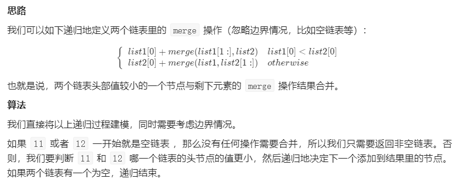
1 2 3 4 5 6 7 8 9 10 11 12 13 14 15 class Solution public ListNode mergeTwoLists (ListNode l1, ListNode l2) if (l1 == null ) { return l2; } else if (l2 == null ) { return l1; } else if (l1.val < l2.val) { l1.next = mergeTwoLists(l1.next, l2); return l1; } else { l2.next = mergeTwoLists(l1, l2.next); return l2; } } }
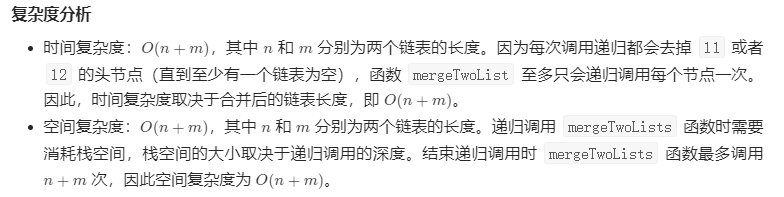
方法二：迭代 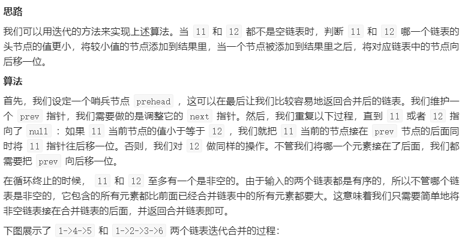
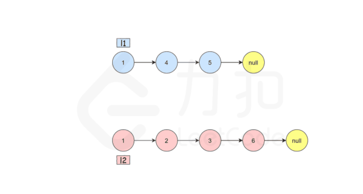
1 2 3 4 5 6 7 8 9 10 11 12 13 14 15 16 17 18 19 20 21 22 class Solution public ListNode mergeTwoLists (ListNode l1, ListNode l2) ListNode prehead = new ListNode(-1 ); ListNode prev = prehead; while (l1 != null && l2 != null ) { if (l1.val <= l2.val) { prev.next = l1; l1 = l1.next; } else { prev.next = l2; l2 = l2.next; } prev = prev.next; } prev.next = l1 == null ? l2 : l1; return prehead.next; } }
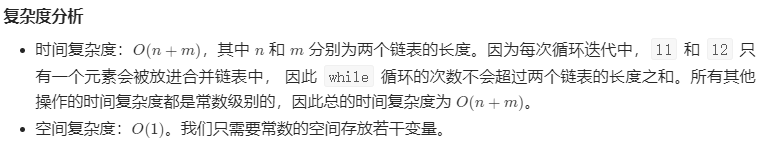
给你单链表的头节点 head ，请你反转链表，并返回反转后的链表。
示例 1：
1 2 输入：head = [1,2,3,4,5] 输出：[5,4,3,2,1]
示例 2：
1 2 输入：head = [1,2] 输出：[2,1]
示例 3：
提示：
链表中节点的数目范围是 [0, 5000]
-5000 <= Node.val <= 5000
进阶：链表可以选用迭代或递归方式完成反转。你能否用两种方法解决这道题？
方法一：迭代 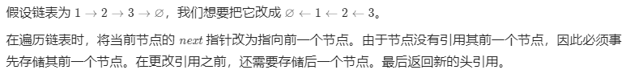
1 2 3 4 5 6 7 8 9 10 11 12 13 class Solution public ListNode reverseList (ListNode head) ListNode prev = null ; ListNode curr = head; while (curr != null ) { ListNode next = curr.next; curr.next = prev; prev = curr; curr = next; } return prev; } }
复杂度分析
时间复杂度：O(n)，其中 n 是链表的长度。需要遍历链表一次。
空间复杂度：O*(1)。
方法二：递归 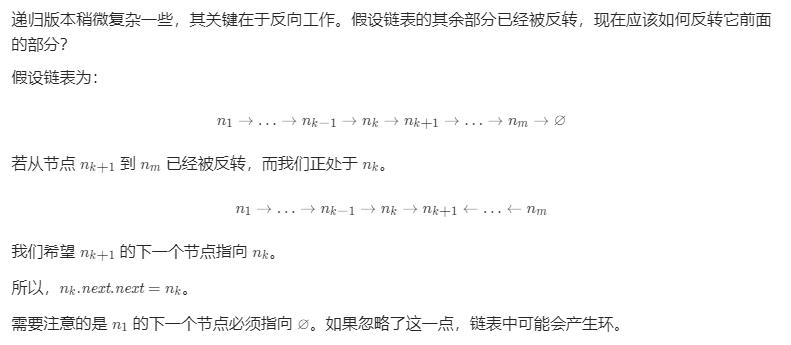
1 2 3 4 5 6 7 8 9 10 11 class Solution public ListNode reverseList (ListNode head) if (head == null || head.next == null ) { return head; } ListNode newHead = reverseList(head.next); head.next.next = head; head.next = null ; return newHead; } }
复杂度分析
时间复杂度：O(n)，其中 n 是链表的长度。需要对链表的每个节点进行反转操作。
空间复杂度：O(n)，其中 n 是链表的长度。空间复杂度主要取决于递归调用的栈空间，最多为 n 层。
给定两个整数 n 和 k，返回范围 [1, n] 中所有可能的 k 个数的组合。
你可以按 任何顺序 返回答案。
1 2 3 4 5 6 7 8 9 10 11 12 13 14 15 16 17 18 示例 1： 输入：n = 4, k = 2 输出： [ [2,4], [3,4], [2,3], [1,2], [1,3], [1,4], ] 示例 2： 输入：n = 1, k = 1 输出：[[1]] 提示： 1 <= n <= 20 1 <= k <= n
方法一：递归实现组合型枚举 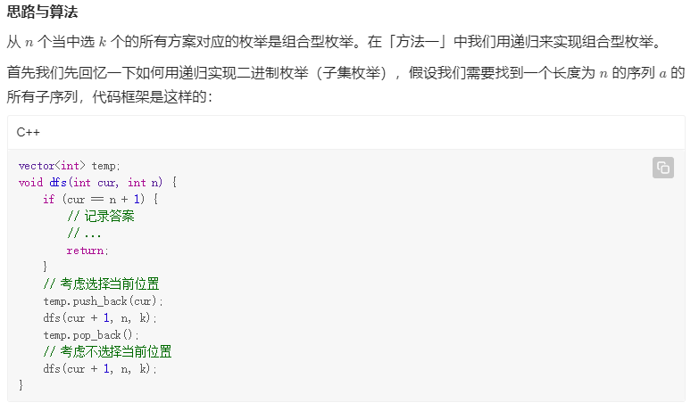
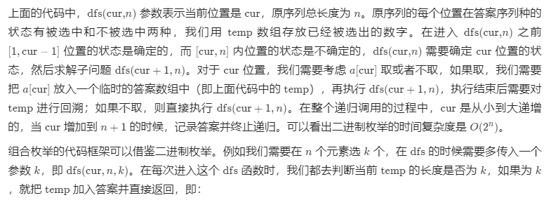
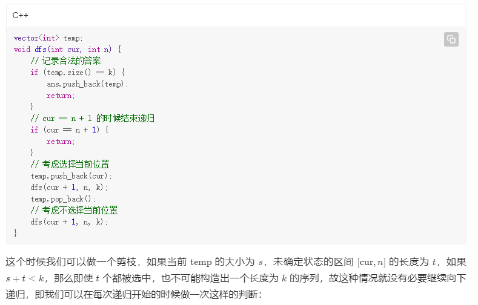
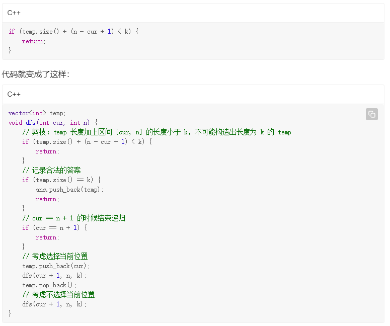
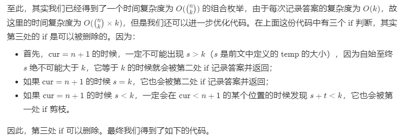
1 2 3 4 5 6 7 8 9 10 11 12 13 14 15 16 17 18 19 20 21 22 23 24 25 26 27 class Solution List<Integer> temp = new ArrayList<Integer>(); List<List<Integer>> ans = new ArrayList<List<Integer>>(); public List<List<Integer>> combine(int n, int k) { dfs(1 , n, k); return ans; } public void dfs (int cur, int n, int k) if (temp.size() + (n - cur + 1 ) < k) { return ; } if (temp.size() == k) { ans.add(new ArrayList<Integer>(temp)); return ; } temp.add(cur); dfs(cur + 1 , n, k); temp.remove(temp.size() - 1 ); dfs(cur + 1 , n, k); } }
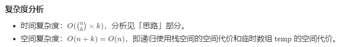
方法二：非递归（字典序法）实现组合型枚举 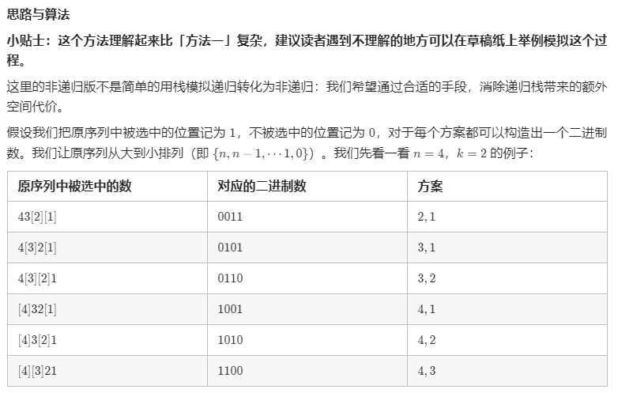
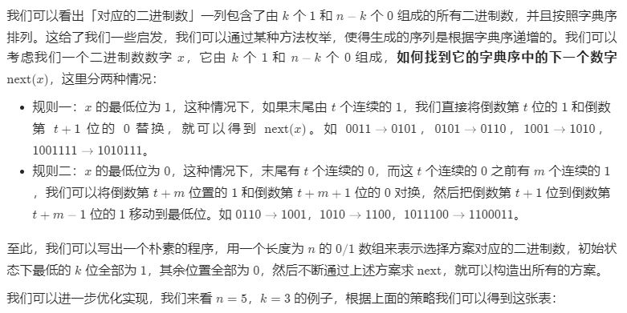
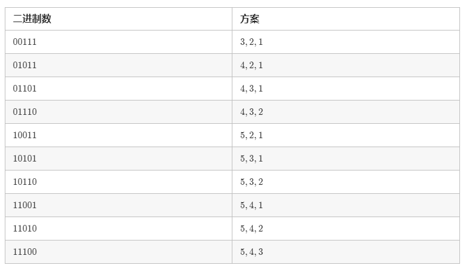
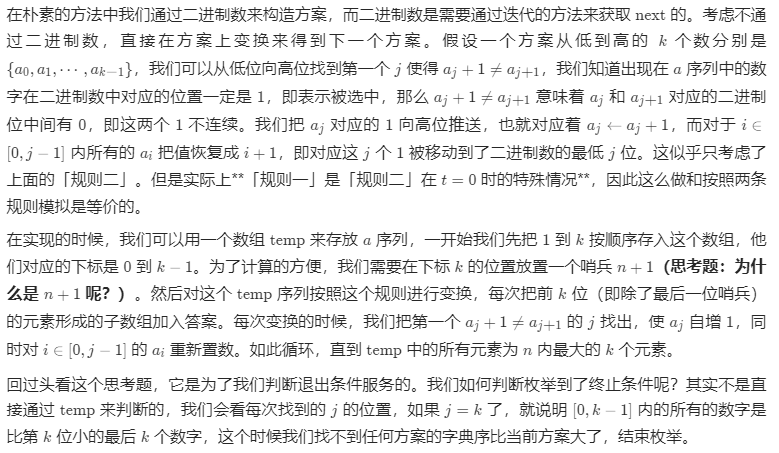
1 2 3 4 5 6 7 8 9 10 11 12 13 14 15 16 17 18 19 20 21 22 23 24 25 26 27 28 29 30 31 class Solution List<Integer> temp = new ArrayList<Integer>(); List<List<Integer>> ans = new ArrayList<List<Integer>>(); public List<List<Integer>> combine(int n, int k) { List<Integer> temp = new ArrayList<Integer>(); List<List<Integer>> ans = new ArrayList<List<Integer>>(); for (int i = 1 ; i <= k; ++i) { temp.add(i); } temp.add(n + 1 ); int j = 0 ; while (j < k) { ans.add(new ArrayList<Integer>(temp.subList(0 , k))); j = 0 ; while (j < k && temp.get(j) + 1 == temp.get(j + 1 )) { temp.set(j, j + 1 ); ++j; } temp.set(j, temp.get(j) + 1 ); } return ans; } }
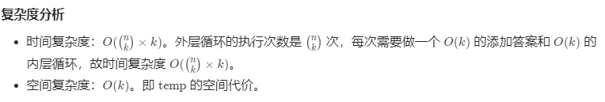
给定一个不含重复数字的数组 nums ，返回其 所有可能的全排列 。你可以 按任意顺序 返回答案。
1 2 3 4 5 6 7 8 9 10 11 12 13 14 示例 1： 输入：nums = [1,2,3] 输出：[[1,2,3],[1,3,2],[2,1,3],[2,3,1],[3,1,2],[3,2,1]] 示例 2： 输入：nums = [0,1] 输出：[[0,1],[1,0]] 示例 3： 输入：nums = [1] 输出：[[1]] 提示： 1 <= nums.length <= 6 -10 <= nums[i] <= 10 nums 中的所有整数 互不相同
回溯法：一种通过探索所有可能的候选解来找出所有的解的算法。如果候选解被确认不是一个解（或者至少不是最后一个解），回溯算法会通过在上一步进行一些变化抛弃该解，即回溯并且再次尝试。
方法一：回溯 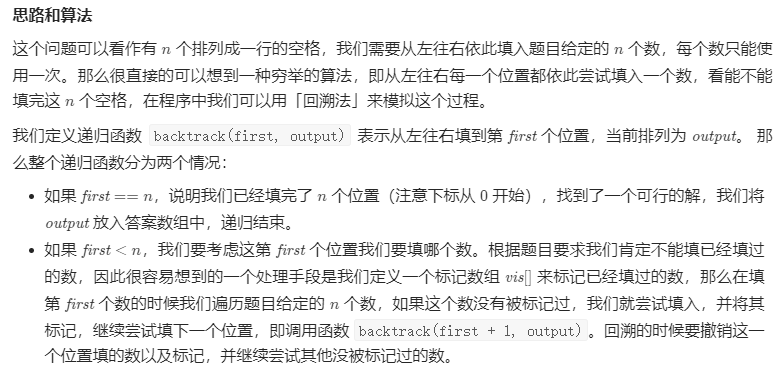
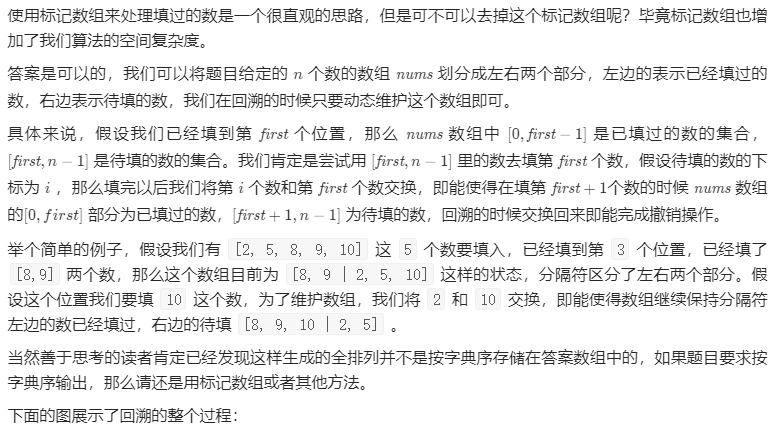
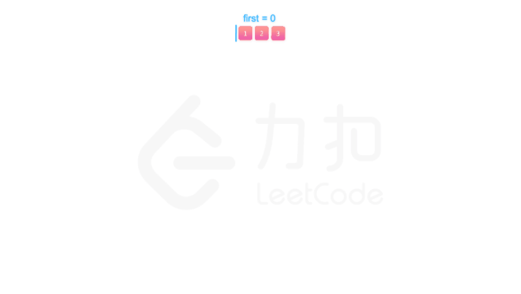
1 2 3 4 5 6 7 8 9 10 11 12 13 14 15 16 17 18 19 20 21 22 23 24 25 26 27 28 29 class Solution public List<List<Integer>> permute(int [] nums) { List<List<Integer>> res = new ArrayList<List<Integer>>(); List<Integer> output = new ArrayList<Integer>(); for (int num : nums) { output.add(num); } int n = nums.length; backtrack(n, output, res, 0 ); return res; } public void backtrack (int n, List<Integer> output, List<List<Integer>> res, int first) if (first == n) { res.add(new ArrayList<Integer>(output)); } for (int i = first; i < n; i++) { Collections.swap(output, first, i); backtrack(n, output, res, first + 1 ); Collections.swap(output, first, i); } } }
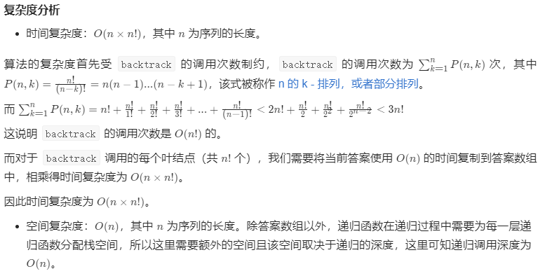
给定一个字符串S，通过将字符串S中的每个字母转变大小写，我们可以获得一个新的字符串。返回所有可能得到的字符串集合。
1 2 3 4 5 6 7 8 9 示例： 输入：S = "a1b2" 输出：["a1b2", "a1B2", "A1b2", "A1B2"] 输入：S = "3z4" 输出：["3z4", "3Z4"] 输入：S = "12345" 输出：["12345"]
提示：
方法一：递归【通过】 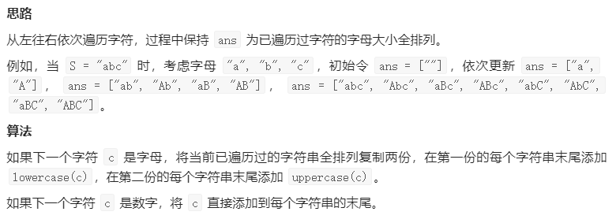
1 2 3 4 5 6 7 8 9 10 11 12 13 14 15 16 17 18 19 20 21 22 23 24 25 class Solution public List<String> letterCasePermutation (String S) List<StringBuilder> ans = new ArrayList(); ans.add(new StringBuilder()); for (char c: S.toCharArray()) { int n = ans.size(); if (Character.isLetter(c)) { for (int i = 0 ; i < n; ++i) { ans.add(new StringBuilder(ans.get(i))); ans.get(i).append(Character.toLowerCase(c)); ans.get(n+i).append(Character.toUpperCase(c)); } } else { for (int i = 0 ; i < n; ++i) ans.get(i).append(c); } } List<String> finalans = new ArrayList(); for (StringBuilder sb: ans) finalans.add(sb.toString()); return finalans; } }
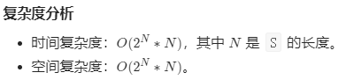
方法二：二分掩码【通过】 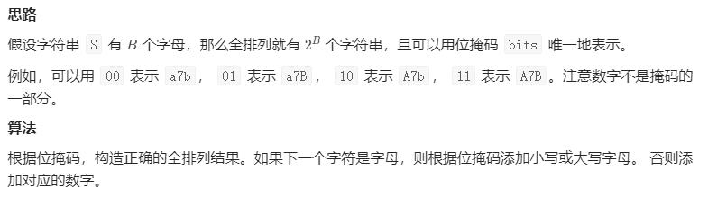
1 2 3 4 5 6 7 8 9 10 11 12 13 14 15 16 17 18 19 20 21 22 23 24 25 26 27 28 29 30 class Solution public List<String> letterCasePermutation (String S) int B = 0 ; for (char c: S.toCharArray()) if (Character.isLetter(c)) B++; List<String> ans = new ArrayList(); for (int bits = 0 ; bits < 1 <<B; bits++) { int b = 0 ; StringBuilder word = new StringBuilder(); for (char letter: S.toCharArray()) { if (Character.isLetter(letter)) { if (((bits >> b++) & 1 ) == 1 ) word.append(Character.toLowerCase(letter)); else word.append(Character.toUpperCase(letter)); } else { word.append(letter); } } ans.add(word.toString()); } return ans; } }
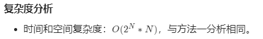
方法三： 内置函数库【通过】 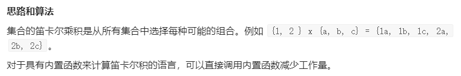
1 2 3 4 class Solution (object) : def letterCasePermutation (self, S) : f = lambda x: (x.lower(), x.upper()) if x.isalpha() else x return map("" .join, itertools.product(*map(f, S)))
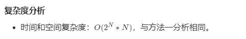


Copyright 2021 sunfy.top ALL Rights Reserved